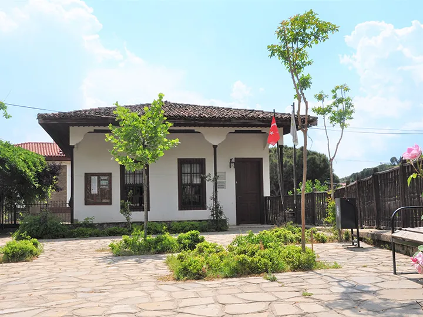
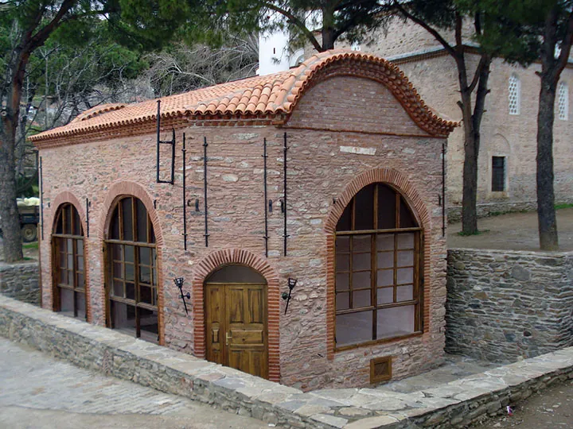
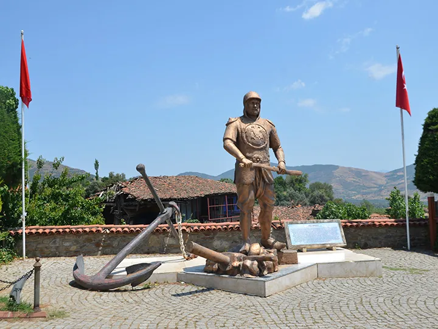
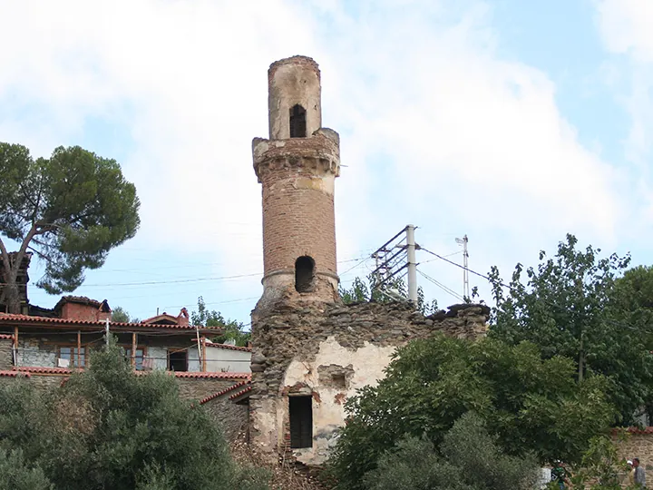
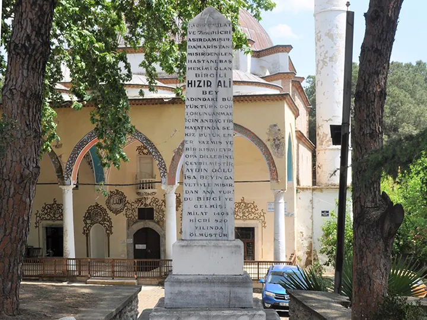
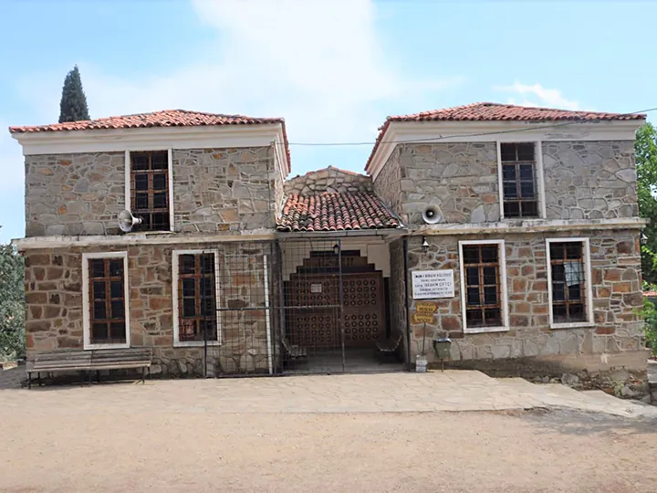
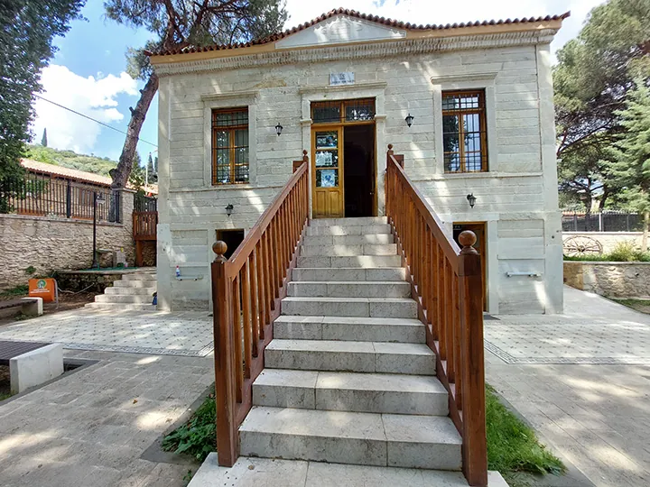
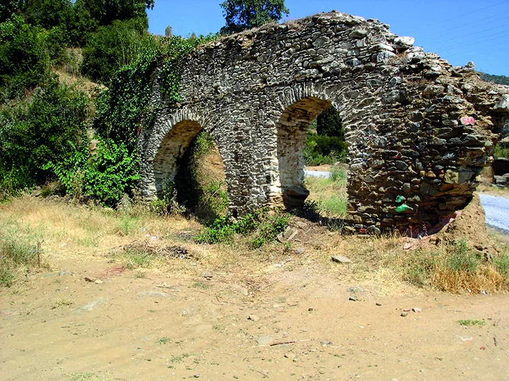
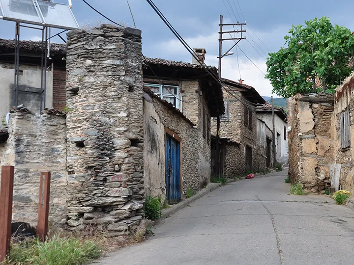
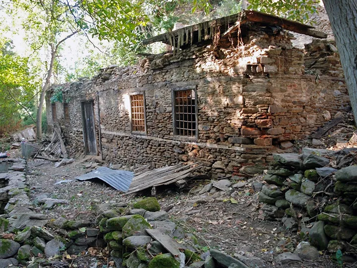

Mansions
 Çakırağa Mansion
Çakırağa MansionMadrasas
 Dervişağa Madrasa
Dervişağa Madrasa İmam-ı Birgivi Madrasa
İmam-ı Birgivi Madrasa Kale (Castle) Madrasa
Kale (Castle) Madrasa Sarı Berber Madrasa
Sarı Berber MadrasaMosques
Hamams
 Aydınoğlu Mehmet Bey Hamam
Aydınoğlu Mehmet Bey Hamam Dervişağa Hamam
Dervişağa HamamFountains
 Çinili (Tiled) Fountain
Çinili (Tiled) Fountain Demir Baba Fountain
Demir Baba Fountain Taşpazar Fountain
Taşpazar FountainTombs
 Aydınoğlu Mehmet Bey Tomb
Aydınoğlu Mehmet Bey Tomb Grave of Hızır Paşa
Grave of Hızır Paşa Grave of İmam-ı Birgivi
Grave of İmam-ı Birgivi Ümmü Sultan Tomb
Ümmü Sultan TombOther Historic Buildings

ÇEKÜL House
Demirli Mağaza (Iron-Shuttered Shop) Weaving Workshop
Weaving Workshop Evliya Çelebi House
Evliya Çelebi House
Statue of Gazi Umur Bey
Güdük Minare Masjid
Hızır Paşa Monument
İmam-ı Birgivi Masjid
Police Station Building Küp Uçuranlar Tower
Küp Uçuranlar Tower
Aqueduct
Water Tower (Su Terazisi) Remains of the Town Walls
Remains of the Town Walls
Tannery Remains